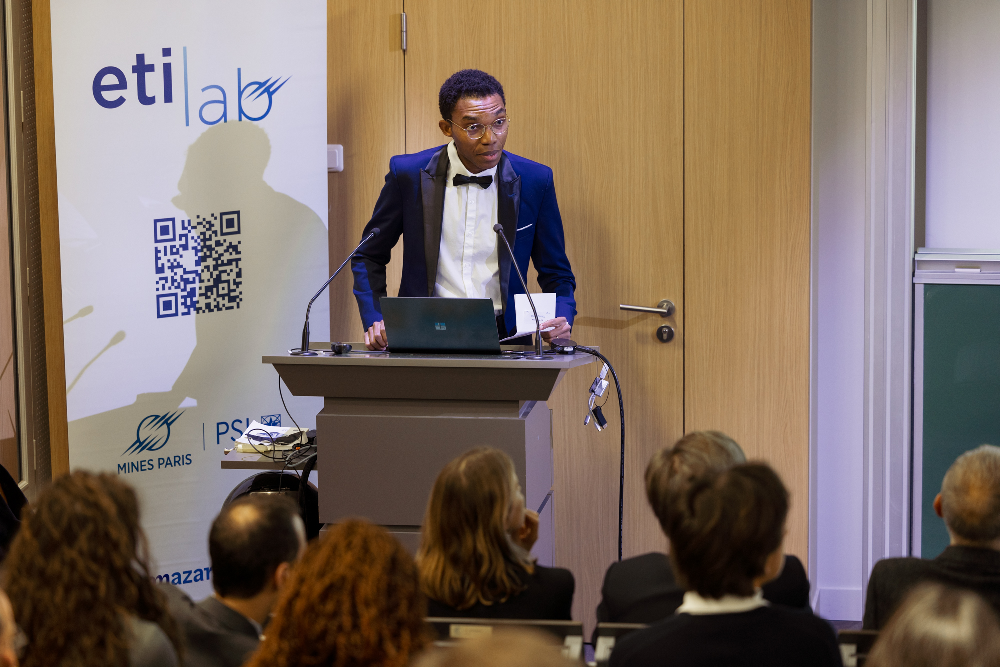

About
I am a PhD candidate in Economics at Mines Paris – PSL, in the CERNA research centre, advised by Pierre Fleckinger and Philippe Mustar (expected 2027).
My work is in entrepreneurial finance and venture capital, combining contract theory with applied econometrics. On the theoretical side I model the contracts that tie venture capital institutions together — venture capitalists, accelerators, pre-seed investors, and limited partners. On the empirical side I study how market-wide shocks reshape cross-border syndication networks.
Research
Job Market Paper
Pooling Contracts between Venture Capital Institutions
Venture capital contracts are bargained deal by deal with entrepreneurs, but contracts between institutions are not: an accelerator committing to a venture capitalist, or a venture capitalist committing to a limited partner, faces non-negotiable terms and often commits blind. In an informed-principal framework, when the principal reveals the project's expected outcome after the investor has committed — the LP-to-VC relationship — an optimal pooling mechanism exists and the budget constraint is slack in cash-rich economies. When revelation comes before the commitment — the accelerator-to-VC relationship — the unique optimal mechanism is again pooling, but the budget constraint binds in every economy, and some positive-NPV projects are necessarily excluded.
Avoiding the British: Brexit and Partner Choice in European Venture Capital
Nothing in the United Kingdom's withdrawal restricted co-investment, yet continental venture capitalists whose pre-determined reliance on British partners was above the median cut the share of their syndicates including a British investor by 8.2 percentage points against a base rate of 18.7%, from the semester of the referendum onwards. The effect is confined to the relational margin: deal counts, stages, round sizes, follow-on financing and exits are all null, established British ties dissolve no faster than comparable continental ones, and aggregate UK–continental volume tracks the rest of Europe. Exposure-based event study on Crunchbase with wild-cluster bootstrap inference.
Protection and Pricing Power in Sequential Venture Financing
In 2022 Y Combinator added $375,000 to its standard deal, invested on a SAFE carrying a most-favored-nation clause: whatever terms a later investor obtains, the accelerator gets them too. Between the accelerator and the first priced round, a company that runs short of cash must raise again, and the investor covering that need sets a price — and chooses how much to advance. Those two margins are not independent: cash advanced beyond the shock survives to the round and lightens what the seed investor must contribute. Two cutoffs in the check then separate three regimes — the intermediate investor absorbs the clause into its own block, prices exactly at the round, or pushes it into the priced round for the seed investor to clear. Which regime it can reach turns on how much it pre-funds. An investor that merely bridges the shock leaves the financing threshold exactly where it was: the clause redistributes equity and rations nothing. One that pre-funds heavily raises the threshold and destroys financing states, so the same cash that lowers the bar is what opens the regimes that raise it. Finally, an investor that takes the same protection for itself is weakly worse off, and strictly so where the clause binds: the value of a most-favored-nation clause is a property of its holder rather than of the clause.
Devenir ETI : les chemins de la croissance
Policy report on the growth of French SMEs into mid-sized firms, combining firm-level statistical analysis, theory, and interviews with company executives.
Activities
« Ces PME qui font des ETIncelles »
Contributor to the chair's event bringing together company executives, policymakers, and researchers around the growth of French SMEs into mid-sized firms (ETI), following the chair's Theory × Data × Fieldwork approach.

Contact
- Email stephen.dossou@minesparis.psl.eu
- Affiliation CERNA, Mines Paris – PSL
- Address 60 boulevard Saint-Michel, 75006 Paris, France
- CV Curriculum vitæ (PDF)